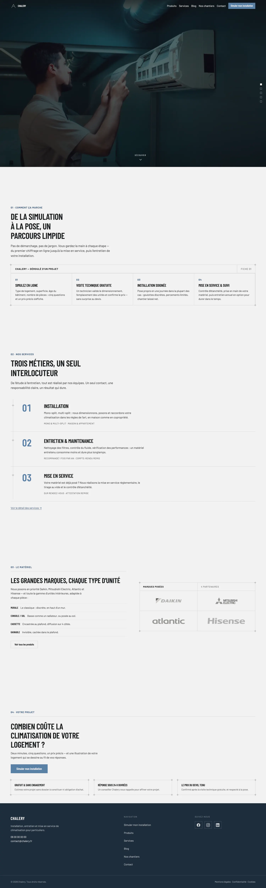
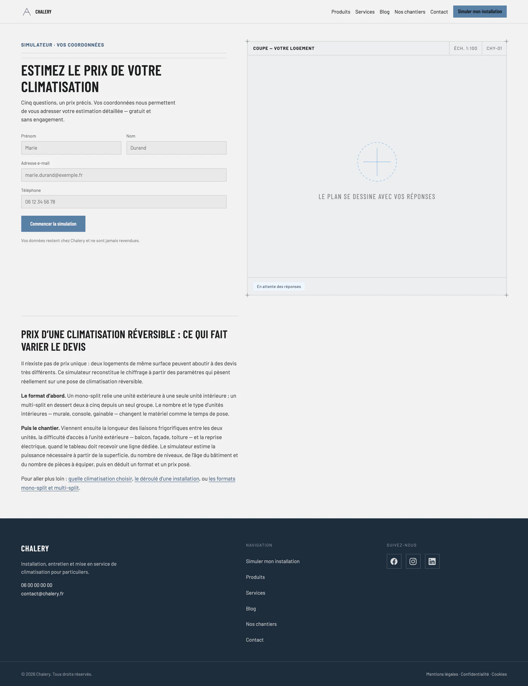
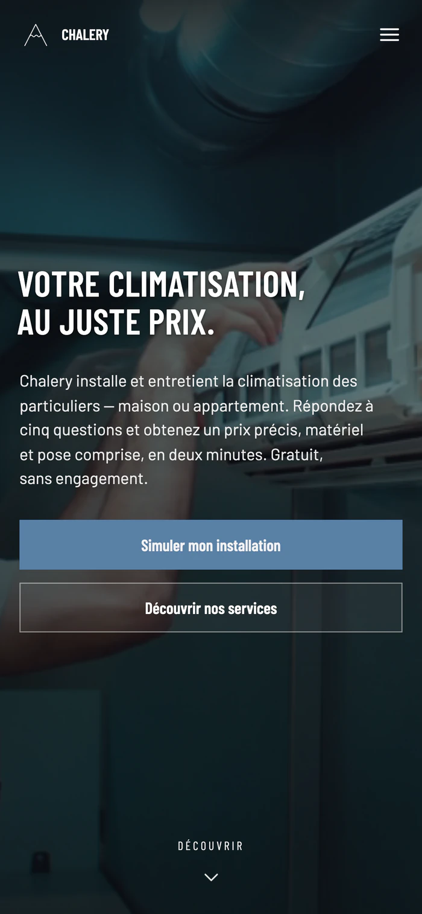

Chalery
Un site dessiné comme un plan technique, avec un simulateur qui trace le logement du client en direct.
Le site.
chalery.fr — l'univers du plan technique, du hero jusqu'au pied de page.

Le point de départ.
Chalery installe, entretient et met en service de la climatisation réversible chez des particuliers. Le vrai frein commercial du métier, c'est le prix : personne ne sait ce que coûte une installation, et il faut appeler pour le savoir — ce qui filtre la moitié des prospects avant même le premier contact. Le site devait donc répondre au chiffre avant la prise de contact, et le faire sans ressembler aux sites d'artisans que le secteur produit en série.
« Votre climatisation, au juste prix. »
Extrait du site chalery.fr
Ce que j'ai fait.
- Construit 13 pages en HTML statique, sans framework ni étape de build, avec des URLs sans extension gérées par .htaccess.
- Décliné un système graphique de plan technique sur tout le site : j'ai compté 43 cadres au filet d'un pixel et 152 marques de repère en équerre sur les 10 pages principales.
- Développé un simulateur de prix en 7 écrans, dont un moteur de chiffrage qui estime la puissance par période de construction — de 130 W/m² avant 1975 à 80 W/m² après 2012.
- Dessiné un plan de coupe SVG qui se redessine à chaque réponse : le bâti s'élargit avec la surface, les cloisons se posent, les unités intérieures apparaissent pièce par pièce.
- Ajouté l'impression de l'estimation via une feuille de style dédiée, avec référence de devis générée, et le partage par URL — les réponses sont encodées en paramètres.
- Auto-hébergé les polices Barlow en woff2, découpées par unicode-range en 15 fichiers, les deux sous-ensembles latins étant préchargés dans le head.
- Écrit un bandeau de consentement où refuser est aussi grand et aussi accessible qu'accepter : même cible de 44 px, un seul niveau, aucun clic supplémentaire.
En chiffres.
Relevés directement dans le code servi par le site, page par page.
La direction artistique.
Le site entier est dessiné comme un plan technique : encadrements au filet d'un pixel, marques de repère en équerre posées six pixels hors de la boîte aux quatre coins, cartouches en capitales espacées, croix de repérage sur la frise des étapes, et jusqu'à la mention « Éch. 1:100 » et un code de planche « CHY-01 » au-dessus du plan du simulateur. Ce n'est pas une décoration posée sur une page d'accueil : c'est le motif qui tient les treize pages.


L'histoire.
Au premier rendez-vous, il y avait un blueprint posé sur la table. J'ai gardé ça. Tout le site est dessiné à la règle : cadres au trait d'un pixel, marques de repère aux quatre coins, cartouche « Éch. 1:100 ». Le simulateur va au bout de l'idée — pendant que le client répond aux questions, une coupe de son logement se dessine en SVG : la maison s'élargit avec la surface, les cloisons se posent, les unités apparaissent pièce par pièce. Pas de framework, pas d'étape de build : du HTML, du CSS, et un fichier JS de 6,8 Ko.
Causons.
Un site à construire, un référencement à reprendre, ou simplement une question technique : je réponds vite, et toujours en personne.
M'écrire un mot →